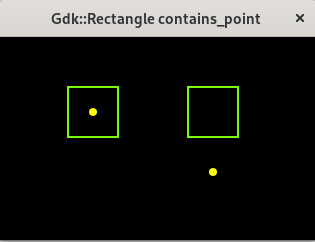

(update:2025/3/30)
長方形の中に点が包含されているかを判定します。
【関 数】
| bool::Gdk::Rectangle::contains_point( | int | x, | // x座標 |
|---|---|---|---|
| int | y ) | // y座標 |
【返 値】
true : 包含している
false : 包含していない
#include <gtkmm.h>
#include <iostream>
class Drawing : public Gtk::DrawingArea {
public:
Drawing();
virtual ~Drawing() = default;
protected:
void on_draw(const Cairo::RefPtr<Cairo::Context>& cr, int width, int height);
};
Drawing::Drawing()
{
set_draw_func( sigc::mem_fun( *this, &Drawing::on_draw));
}
void Drawing::on_draw(const Cairo::RefPtr<Cairo::Context>& cr, int width, int height) {
// background
Gdk::Cairo::set_source_rgba( cr, Gdk::RGBA( "black" ));
cr->paint();
// contains
Gdk::Rectangle r1( 70, 50, 50, 50);
int x1 = 95, y1 = 75;
if ( r1.contains_point( x1, y1 )) {
std::cout << "contain" << std::endl;
}
else {
std::cout << "leave" << std::endl;
}
Gdk::Cairo::set_source_rgba( cr, Gdk::RGBA( "lawngreen" ));
cr->rectangle( 70, 50, 50, 50 );
cr->stroke();
Gdk::Cairo::set_source_rgba( cr, Gdk::RGBA( "yellow" ));
cr->arc( x1, y1, 4.0, 0.0, 2*M_PI );
cr->fill();
// leave
Gdk::Rectangle r2( 190, 50, 50, 50);
int x2 = 215, y2 = 135;
if ( r2.contains_point( x2, y2 )) {
std::cout << "contain" << std::endl;
}
else {
std::cout << "leave" << std::endl;
}
Gdk::Cairo::set_source_rgba( cr, Gdk::RGBA( "lawngreen" ));
cr->rectangle( 190, 50, 50, 50 );
cr->stroke();
Gdk::Cairo::set_source_rgba( cr, Gdk::RGBA( "yellow" ));
cr->arc( x2, y2, 4.0, 0.0, 2*M_PI );
cr->fill();
}
class MyWindow : public Gtk::Window
{
public:
MyWindow();
protected:
Drawing my_draw;
};
MyWindow::MyWindow()
{
set_title( "Gdk::Rectangle contains_point" );
set_default_size( 320, 240 );
set_child( my_draw );
}
int main(int argc, char* argv[]) {
auto app = Gtk::Application::create( "gtkmm4.example" );
return app->make_window_and_run<MyWindow>( argc, argv );
}
| Text Align Center | |
|---|---|
| Console | Window |
|
contain leave |
 |